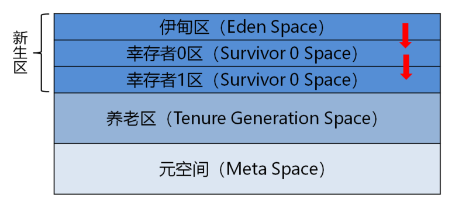
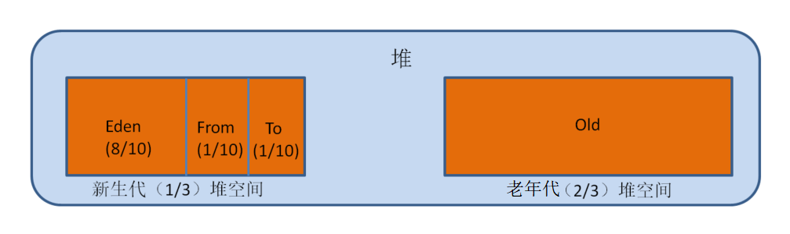
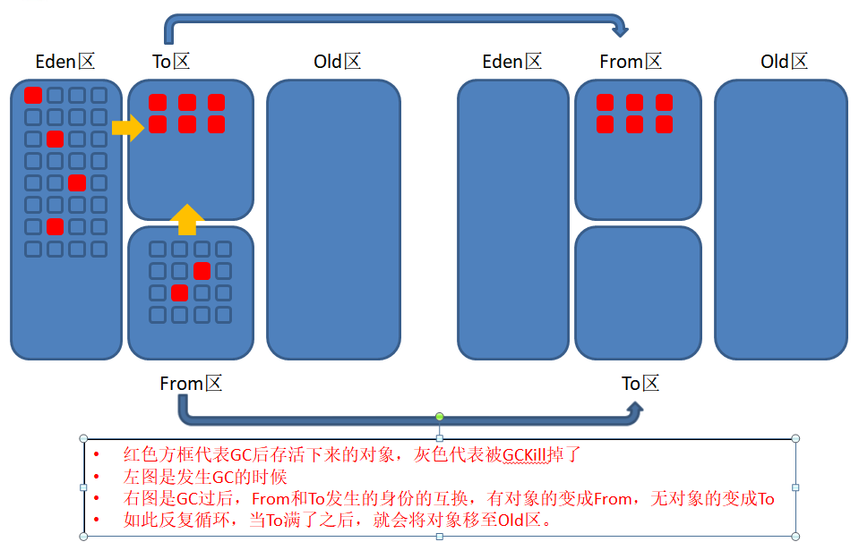
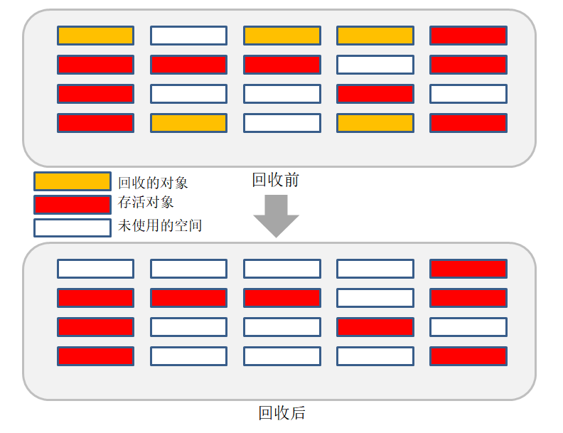
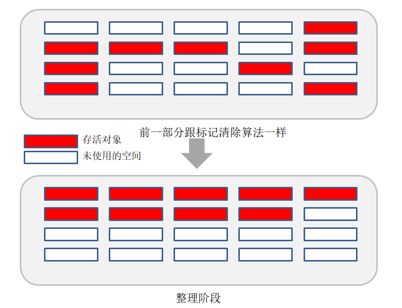

初步了解JVM第三篇（堆和GC回收算法）原文出处:本文由博客园博主linzepeng提供。
原文连接:https://www.cnblogs.com/linzepeng/p/12069353.html
在《初步了解JVM第一篇》和《初步了解JVM第二篇》中，分别介绍了：
- 类加载器：负责加载*.class文件，将字节码内容加载到内存中。其中类加载器的类型有如下：执行引擎：负责解释命令，提交给操作系统执行。
- 启动类加载器（Bootstrap）
- 扩展类加载器（Extension）
- 应用程序类加载器（AppClassLoader）
- 用户自定义加载器（User-Defined）
- 执行引擎：负责解释命令，提交给操作系统执行。
- 本地接口：目的是为了融合不同的编程语言提供给Java所用，但是企业中已经很少会用到了。
- 本地方法栈：将本地接口的方法在本地方法栈中登记，在执行引擎执行的时候加载本地方法库
- PC寄存器：是线程私有的，记录方法的执行顺序，用以完成分支、循环、跳转、异常处理、线程恢复等基础功能。
- 方法区：存放类的架构信息，ClassLoader加载的class文件内容存放在方法区中。
- 栈：线程私有，用来管理Java程序的运行。
进行简单的回顾后，接下来为大家介绍Java中的堆。
堆（Heap）
大家可会分不清栈和堆，其实可以简单记住一句话：栈管运行，堆管存储。堆是线程共享的，而栈是线程私有的。那么什么是堆呢？
在一个JVM实例中，堆内存只存在一个。对内存的大小是可以进行调节的，类加载器读取了类文件之后需要把类、方法、常变量放到堆内存中，保存所有引用类型的真实信息，以便执行器执行。
首先抛给一个大的概念给大家先，为大家介绍堆内存的三大部分（这里我们讲的以JDK8的版本为准，也就是将永久代变改为元空间）：
- 新生区：我们new出来的对象的存放地址，而新生区又分为三部分：
- Eden（伊甸区）
- Survivor 0 Space（幸存者0区）
- Survivor 1 Space（幸存者1区）
- 养老区：新生区的对象经过15次的GC回收（垃圾回收）之后存活下来的对象就放在这里，养老区如果满了也会进行GC回收，只不过发生的频率小于新生区
- 元空间：元空间我们上一篇已经讲过了，主要是用来存放类的结构信息，类似一个模板。

上以就是堆内存的大三部分：伊甸区、养老区、元空间。上图是逻辑上的结构，但是在物理上只有新生区和养老区，而且我们需要区分新生代和养老代用的是JVM的内存，但是元空间用的是系统内存。如果看得有点懵，不要紧，先来我们来一个一个介绍，首先第一部分新生区。
新生区
新生区就是类的诞生、成长、消亡的区域。一个类在这里产生、然后应用，最后被垃圾回收器回收，结束了的生命的过程释放出内存。那么我们来简单说一下，一个类被new出来之后从开始到消亡的一个过程：
- 1）假设有一个程序是一直不断在new对象，那么new出来的对象首先就是存放在新生区的伊甸区，（注意：一般new的对象是放在新生区的伊甸区的，大的对象会特殊处理）。
- 2）伊甸区的内存也是有限，程序一直在不断的new对象，终于！！！在某一个时刻，伊甸园的空间快没有地方可以存放新的对象了。也就是达到伊甸区存放对象的阈值。这时候，注意！！！伊甸区就开始进行垃圾回收，也就是我们常说的轻GC，将大部分不再使用的对象Kill掉！！留下还在使用的对象。因为堆内存里面的对象绝大多数都是临时对象，所以一次垃圾回收会Kill掉90%以上的对象，能存活下来的数量非常少。
- 3）存活下来的对象就从伊甸区移到了幸存者0区，注意幸存者0区还有一个别名就做From。
- 4）虽然垃圾回收会Kill掉大部分的对象，但是我们还是不能排除有个别现象存在伊甸区和幸存者0区再一次满了的情况，因为程序new的速度肯定是比Kill的速度快的，终于又在某一时刻！！！伊甸区又达到了一定的阈值，再次进行垃圾回收，这时候就会将伊甸区和幸存者0区（注意：迁移的对象包括幸存者0区）存活下来的对象迁移到幸存者1区（幸存者1区的另外一个别名为To）。
- 5）一直如此反复，等到幸存者1区也满了，就将存活的对象移到养老区进行养老，能到养老区的一般都一些长期使用的对象。那养老区怎么确定哪些才是长期使用的对象呢？在新生区中，一个对象经过每次垃圾回收之后幸存下来的，都会进行计数，经过了15次垃圾回收之后依然存在的，就会进入到养老区。
（注意：讲到这里，是大部分对象消亡了，但是还是有经过15次垃圾回收之后存活下来的对象进入了养老区）
养老区
在新生区中，我们已经描述了一个类从开始到消亡或者进入养老区的过程，要么就是被kill了，要么就是进入了养老区。进入养老区之后就可以舒舒服服的摸鱼了吗？你想得太简单了，接下来看看，养老区又有怎么样的一番搏斗呢：
- 1）从新生区幸存下来的幸运儿来到了养老区养老，养老区就相当一个养老院，但是一个养老院也会满员。这时候，没办法了，只能清出一部分老人，让新的一批从新生区来的老人入住，这时候就发生了垃圾回收，也就是我们说的重GC。
- 2）虽然在养老区也会发生垃圾回收机制，但是还是会有一天，这个养老院实在是腾不出空位了，即使是进行重GC也腾不出几个空间，这时候没办法了！！！代表已经没有内存了，玩不转了，所以系统就会报错，也就是我们常看到的OOM（“OutOfMemoryError”）:对内存溢出。
- 3）于是乎，程序就异常停止了，所有对象都消亡了，这个就是程序中一个对象从开始到消亡的整个过程。
堆的内存大小分配：

注：
- From就是上面说的幸存者0区的别名
- To就是上面说的幸存者1区的别名
这个比例我们一定要记住，非常重要，这是在GC时选取何种算法的一个依据之一，新生代跟老年代是1：2，而新生代中的三个分区中分别是8：1：1。
看完了堆内存的结构，接下来我们就要讲讲GC垃圾回收算法了。在上面我们描述了一个对象从开始到结束的过程，中间会发生GC回收，其中：
- 新生代：发生的GC叫做轻GC也叫MinorGC，所用的算法叫做复制算法。
- 老年代：发生的GC叫做重GC也叫Full GC，所用的算法叫做标记清除算法和标记压缩算法
这里过个眼熟，下面我们在GC垃圾回收算法的时候会讲到。
垃圾回收算法
在进行垃圾回收的时候，JVM需要根据不同的堆内存和结构去选取适合的算法来提高垃圾回收的效率，而垃圾回收算法主要有：
1）引用计数算法
原理：给对象中每一个对象分配一个引用计数器，每当有地方引用该对象时，引用计数器的值加一，当引用失效时，引用计数器的值减一，不管什么时候，只要引用计数器的值等于0了，说明该对象不可能再被使用了。
优点：
- 实现原理简单，而且判定效率很高。大部分情况下都是一个不错的算法。
缺点：
- 每次对对象复制时均要维护引用计数器，且计数器本身也有一定的消耗。
- 较难处理循环引用。
在JVM中一般不采用这种方式实现，所以就不展开来讲了。
2）复制算法（Copying）——新生代使用
在新生代中的GC，用的主要算法就是复制算法，而且发生GC的过程中From区和To区会发生一次交换（请记住这句话）。在堆的内存分配图中JVM把年轻代分为了三部分：1个Eden区和2个Survivor区（别名叫From和To）。默认比例为8：1：1，一般情况下，新创建的对象都会被分配到Eden区（一些大对象特殊处理），当Eden区进行了GC还存留下来的就会被移到Survivor区。对象在Survivor区每经过一轮GC存留下来年龄就会加1。直到它存活到了一定岁数的是时候就会被移到养老区。由于新生区中的绝大部分对象都是临时对象，不会存活太久，所以经过每一轮的GC之后存活下来的对像都不多，所以新生区所用的GC算法就是复制算法。
复制算法原理：
首先先给大家介绍一个名词叫做根集合（GC Root）：
- 通过System Class Loader或者Boot Class Loader加载的class对象，通过自定义类加载器加载的class不一定是GC Root
- 处于激活状态的线程
- 栈中的对象
- JNI栈中的对象
- JNI中的全局对象
- 正在被用于同步的各种锁对象
- JVM自身持有的对象，比如系统类加载器等
有了上面的了解我们就可以来学学复制算法：
- 复制算法从根集合（GC Root）开始，从From区中找到经过GC存活下来的对象（注意：虽然说是From区，但是这里的From区是包括了伊甸区和幸存者1区（别名From），所以大家不要认为From区就是单单包括From区而已）。拷贝到To中；
- 上面我们说过From和To会发生一次交换就是发生在这里，From将幸存下来的对象拷贝到To之后，这时From区就没有对象，空出来了，而To现在不是空的，存放了From的幸存的对象（默认状态是From有对象，To是空的）。这时候From和To就会发生身份的互换，下次内存分配从To开始。也就是说发生一次GC之后From就会变成To，To就会变成From（当谁是空的，谁就是To）
- 一直这样反复GC，一直再一次发生GC的时候，From存活的对象拷贝到To时，To会被填满，这时候就会把这些对象（满足年龄为15的对象，这个值可以通过-XX:MaxTenuringThreshold来设置，默认是15）移动到养老区。
下面我们用一张图来描述一下复制算法发生的过程：

我们一直都在反复强调，Eden区的对象存活率是比较低的，所以一般就是拿两块10%的内存作为空闲区（To）和活动区（From），拿80%的内存来存储新建的对象。一但GC过后，就会将这10%的活动区和80%的Eden区存留下来的对象移到空闲区（To）中。然后之前的内存就得到了释放，依次类推。
复制算法的缺点：
- 复制的时候需要耗费一般的内存，内存消耗大（但是效率的快的，而且新生区的存活效率低，并不需要复制太多的对象，所以新生区用这种算法效率是比我们下面要讲的算法效率高的）。
- 如果对象的存活率很高，需要复制的对象太多，这时候效率就大大降低了。
复制算法的优点：
- 没有标记和清除的过程，效率高。
- 因为是直接对对象进行复制的，所以不会产生内存碎片。
3）标记清除算法（Mark-Sweep）
老年代主要由标记清除算法和标记压缩算法混合使用。
标记算法的步骤从名字其实就可以看出来是怎么回事了：
在复制算法中我们就说了它的缺点是浪费空间，所以为了解决这个问题，就不将对象进行复制了，因为复制一份需要同等大小的内存。标记清除算法采用标记的方式，将要清除的对象进行标记然后直接清除掉，这样就就大大节省了空间了。同上，继续来通过一张图来理解：

上图就是标记清除算法的过程，从过程中可以看出一些问题：
由于回收的对象是进行标记后直接删除的，所以就像上图回收后所展示的一样，内存空间是不连续的，也就是会有内存碎片的产生。第二个问题是复制算法是直接复制的，但是标记清除算法是需要扫描两次，耗时严重。
标记清除算法的优点：
标记清除算法的缺点：
- 效率低，在进行GC时，需要停止整个程序。
- 清理出来的内存空间是不连续的，存在内存碎片。由于空间不连续，查找的效率也会降低
但是由于养老区存活下来的对象会比新生区的对象多，所以用标记清除是比复制算法好的。
4）标记压缩算法（Mark-Compact）
理解了标记清除算法后，其实这一个算法就比较简单理解了。就是多了一步整理的阶段，清除内存碎片使空间变得连续。过程如下图：

标记压缩算法的优点：
- 可以看到，标记的存活对象将会被整理，按照内存地址依次排列，而未被标记的内存会被清理掉。如此一来，当我们需要给新对象分配内存时，JVM只需要持有一个内存的起始地址即可，这比维护一个空闲列表显然少了许多开销。
- 标记/整理算法不仅可以弥补标记清除算法当中，内存区域分散的缺点，也消除了复制算法当中，内存减半的高额代价。
标记压缩算法的缺点：
- 虽然这个算法解决了上两个算法的一些缺点，但是这个算法却是耗时最长的。从效率来看是低于标记清除算法和复制算法的。
以上就是GC的四大算法，当然出了这四大算法还有标记清除压缩算法（Mark-Sweep-Compact），这个也很好理解就是在整理阶段不再是GC一次就整理一次，而是每隔一段时间整理一次，减少移动对象的成本。
分代收集算法：
当有人问你哪个算法是最好的时候，你的回答应该是：无，没有最好的算法，只有最合适的算法。使用哪个算法应该看GC发生在什么地方：
- 新生代：复制算法
- 原因：存活率低，需要复制的对象很少，所需要用到的空间不是很多。另外一方面，新生代发生的频率是非常高的，而复制算法的效率在新生代是最高的，所以新生代用复制算法是最合适的。
- 老年代：标记清除和标记压缩算法混合使用
- 原因：存在大量存活率高的对像，复制算法明显变得不合适。一般是由标记清除或者是标记清除与标记整理的混合实现。
- Mark阶段的开销与存活对像的数量成正比，这点上说来，对于老年代，标记清除或者标记整理有一些不符，但可以通过多线程利用，对并发、并行的形式提高标记效率。
- Sweep阶段的开销与所管理区域的大小成正相关，但是清除“就地处决”的特点，回收的过程没有移动对象。使其相对其它有移动对像步骤的回收算法，仍然是效率最好的。但是需要解决内存碎片问题。
- Compact阶段的开销与存活对像的数据成开比，如上一条所描述，对于大量对像的移动是很大开销的，做为老年代的第一选择并不合适。
- 基于上面的考虑，老年代一般是由标记清除或者是标记清除与标记整理的混合实现。以hotspot中的CMS回收器为例，CMS是基于Mark-Sweep实现的，对于对像的回收效率很高，而对于碎片问题，CMS采用基于Mark-Compact算法的Serial Old回收器做为补偿措施：当内存回收不佳（碎片导致的Concurrent Mode Failure时），将采用Serial Old执行Full GC以达到对老年代内存的整理。
终于写完了，以上便是本人对JVM的理解，如有不足欢迎提出，谢谢！！！